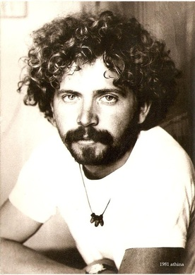

overview of hmnSngo
description::
· the-author of https://synagonism.net.
· I am-researching KNOWLEDGE-MANAGEMENT (by machines and humans) for more than 35 years.
· my goal is the-creation of consistent, monosemantic, subjective WORLDVIEWS[a], manifesting the-unity-of-science, readable by humans and machines, which[a] will-help us to build a-better society.
· for example, we could-not-have a-better society if we can-not-manage a-society's-law.
· obviously DOCUMENT-management does-not work (to do knowledge-management).
· DATA-management (terminology|vocabulary|ontology) has its limits.
· CONCEPT-MANAGEMENT is the-future and this is my-work[b].
· it[b] includes a-theory-of-knowledge and a-theory-of-language and solves the-problem of the-relation of text|speech to knowledge.
· concepts are NOT the-units of knowlege (as we see in texts), concepts ARE the-knowledge.
· the-solution I propose on knowledge-management is STRUCTURED-KNOWLEDGE using SENSORIAL-CONCEPTS-MCS.
· BUT my life-time is finite and I need collaborative man-power to make concept-management obviously a-better method for knowledge-management.
· I need an-McsmgrHitp[c] with a-wysiwyg editor for McsHitp-concepts that[c] also manages the-attributes of generic-specific concept relations.
· in the-current website, I mainly publish my-worldview in McsHitp-format.

A picture of me in {1978} (19 years young) that shows my-modelWorld at that time.
name::
* McsEngl.McsHmn000003.last.html//dirHmn//dirMcs!⇒hmnSngo,
* McsEngl.dirMcs/dirHmn/McsHmn000003.last.html!⇒hmnSngo,
* McsEngl.HmnSgm!⇒hmnSngo,
* McsEngl.HoKoNoUmo!⇒hmnSngo,
* McsEngl.Kaseluris.Nikos.1959!⇒hmnSngo,
* McsEngl.Kasselouris.Nikolaos.1959!⇒hmnSngo,
* McsEngl.Nikos-Kasselouris.1959!⇒hmnSngo,
* McsEngl.Synagonism!⇒hmnSngo,
* McsEngl.hmnSgm!⇒hmnSngo, {2021-01-18},
* McsEngl.hmnSinago!⇒hmnSngo,
* McsEngl.hmnSngo,
* McsEngl.hmnSngo'(McsHmn000003)!⇒hmnSngo,
* McsEngl.hmnSngo'(Kaseluris.Nikos.1959)!⇒hmnSngo,
* McsEngl.human.Kaseluris.Nikos.1959!⇒hmnSngo,
* McsEngl.nikkas!⇒hmnSngo,
====== langoGreek:
* McsElln.Νίκος-Κασσελούρης.1959!=hmnSngo,
* McsElln.Νικόλαος-Κασσελούρης.1959!=hmnSngo,
* McsElln.ΚΑΣΣΕΛΟΥΡΗΣ.ΝΙΚΟΛΑΟΣ.1959!=hmnSngo,
* McsElln.Κασελούρης.Νίκος.1959!=hmnSngo,
* McsElln.Κασσελούρης.Νίκος.1959!=hmnSngo,
01_identification of hmnSngo
description::
·
name::
* McsEngl.hmnSngo/att001-identification,
* McsEngl.hmnSngo/identification,
image of hmnSngo
description::
· {2021} Ioannina (62 years old)
· {2011} Ioannina (52 years old)
· {2001} Lefkadha (42 years old)
· {1991} Washington-DC (32 years old)

· {1981} Athina (22 years old)
name::
* McsEngl.hmnSngo/att002-image,
* McsEngl.hmnSngo/image,
body of hmnSngo
description::
·
name::
* McsEngl.hmnSngo'body,
mind of hmnSngo
description::
·
name::
* McsEngl.hmnSngo'mind,
qualification of hmnSngo
description::
❀ Bs in Mathematics, University-of-Joannina, Greece {1981}.
❀ Ms in Information-Management, George-Washington-University, USA {1992}.
❀ mainly, I am a self-educated
person, especially in Philosophy, Linguistics, Economics, Sociology, History, Political-science.
❀ but, as Socrates
said very long ago, I am sure that:
"ONE thing I know, that NOTHING know" ("ἓν οἶδα ὅτι οὐδὲν οἶδα"), i.e. what I know, in relation to what I do-not-know, is "a-drop in the-ocean".
name::
* McsEngl.hmnSngo'education,
* McsEngl.hmnSngo'qualification,
job of hmnSngo
description::
❀ junior-high-school information-technology TEACHER.
name::
* McsEngl.hmnSngo'job,
product of hmnSngo
description::
·
name::
* McsEngl.hmnSngo'product,
place of hmnSngo
description::
× birth-place: Arta (Fotino), GREECE.
× living-place: since {1995} I'm living in Joannina,
with the-exception that from {1999-sep-01} to {2002-jun-30} I was-living in Lefkada (Vasiliki) island.
name::
* McsEngl.hmnSngo'birth-place,
* McsEngl.hmnSngo'living-place,
* McsEngl.hmnSngo'place,
socialitation of hmnSngo
description::
·
name::
* McsEngl.hmnSngo'socialitation,
family of hmnSngo
description::
❀ I have two sons: Apostolos, born in {1997} and Aristotelis, born in {1998}.
name::
* McsEngl.hmnSngo'family,
personality of hmnSngo
interest of hmnSngo
description::
· sensorial-concepts-Mcs and Mcsmanager.
· web-programming (HTML, CSS, Javascript).
❀ SensorialBrainualConcept-Theory and its implementation SBConcept-Program (a multi-author, multi-language WORLD-VIEW Management|Integration Computer-Program) {2010-01-16}.
Since {1985} I have-devoted my life on them.
name::
* McsEngl.hmnSngo'interest,
Infrsc of hmnSngo
name::
* McsEngl.hmnSngo/resource,
addressWpg::
*
structure of hmnSngo
name::
* McsEngl.hmnSngo/structure,
description::
*
DOING of hmnSngo
name::
* McsEngl.hmnSngo/doing,
description::
*
evoluting of hmnSngo
name::
* McsEngl.hmnSngo/evoluting,
{2021-01-18}::
=== McsHitp-creation:
· creation of current concept.
lifetime of hmnSngo
description::
× birth-date: {1959-02-17}
× age: 62 {2021}
× death-date:
× lifetime:
name::
* McsEngl.hmnSngo'age,
* McsEngl.hmnSngo'birth-date,
* McsEngl.hmnSngo'lifetime,
WHOLE-PART-TREE of hmnSngo
name::
* McsEngl.hmnSngo/whole-part-tree,
whole-tree-of-hmnSngo::
*
* ... Sympan.
part-tree-of-hmnSngo::
*
GENERIC-SPECIFIC-TREE of hmnSngo
name::
* McsEngl.hmnSngo/generic-specific-tree,
generic-tree-of-hmnSngo::
* ,
* ... entity.
specific-tree-of-hmnSngo::
* ,